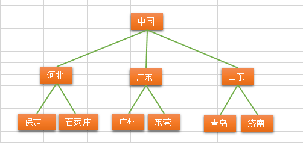

树与树算法
树的概念
树（英语：tree）是一种抽象数据类型（ADT）或是实作这种抽象数据类型的数据结构，用来模拟具有树状结构性质的数据集合。它是由n（n>=1）个有限节点组成一个具有层次关系的集合。把它叫做“树”是因为它看起来像一棵倒挂的树，也就是说它是根朝上，而叶朝下的。它具有以下的特点：
- 每个节点有零个或多个子节点；
- 没有父节点的节点称为根节点；
- 每一个非根节点有且只有一个父节点；
- 除了根节点外，每个子节点可以分为多个不相交的子树；
比如说：


树的术语
- 节点的度：一个节点含有的子树的个数称为该节点的度；
- 树的度：一棵树中，最大的节点的度称为树的度；
- 叶节点或终端节点：度为零的节点；
- 父亲节点或父节点：若一个节点含有子节点，则这个节点称为其子节点的父节点；
- 孩子节点或子节点：一个节点含有的子树的根节点称为该节点的子节点；
- 兄弟节点：具有相同父节点的节点互称为兄弟节点；
- 节点的层次：从根开始定义起，根为第1层，根的子节点为第2层，以此类推；
- 树的高度或深度：树中节点的最大层次；
- 堂兄弟节点：父节点在同一层的节点互为堂兄弟；
- 节点的祖先：从根到该节点所经分支上的所有节点；
- 子孙：以某节点为根的子树中任一节点都称为该节点的子孙。
- 森林：由m（m>=0）棵互不相交的树的集合称为森林；
树的种类
- 无序树：树中任意节点的子节点之间没有顺序关系，这种树称为无序树，也称为自由树；
- 有序树：树中任意节点的子节点之间有顺序关系，这种树称为有序树；
- 二叉树：每个节点最多含有两个子树的树称为二叉树；
- 完全二叉树：对于一颗二叉树，假设其深度为d(d>1)。除了第d层外，其它各层的节点数目均已达最大值，且第d层所有节点从左向右连续地紧密排列，这样的二叉树被称为完全二叉树，其中满二叉树的定义是所有叶节点都在最底层的完全二叉树;
- 平衡二叉树（AVL树）：当且仅当任何节点的两棵子树的高度差不大于1的二叉树；
- 排序二叉树（二叉查找树（英语：Binary Search Tree），也称二叉搜索树、有序二叉树）；
- 霍夫曼树（用于信息编码）：带权路径最短的二叉树称为哈夫曼树或最优二叉树；
- B树：一种对读写操作进行优化的自平衡的二叉查找树，能够保持数据有序，拥有多余两个子树。
- 二叉树：每个节点最多含有两个子树的树称为二叉树；
树的存储与表示
顺序存储：将数据结构存储在固定的数组中，然在遍历速度上有一定的优势，但因所占空间比较大，是非主流二叉树。二叉树通常以链式存储。

链式存储：

由于对节点的个数无法掌握，常见树的存储表示都转换成二叉树进行处理，子节点个数最多为2
常见的一些树的应用场景
1.xml，html等，那么编写这些东西的解析器的时候，不可避免用到树
2.路由协议就是使用了树的算法
3.mysql数据库索引
4.文件系统的目录结构
5.所以很多经典的AI算法其实都是树搜索，此外机器学习中的decision tree也是树结构